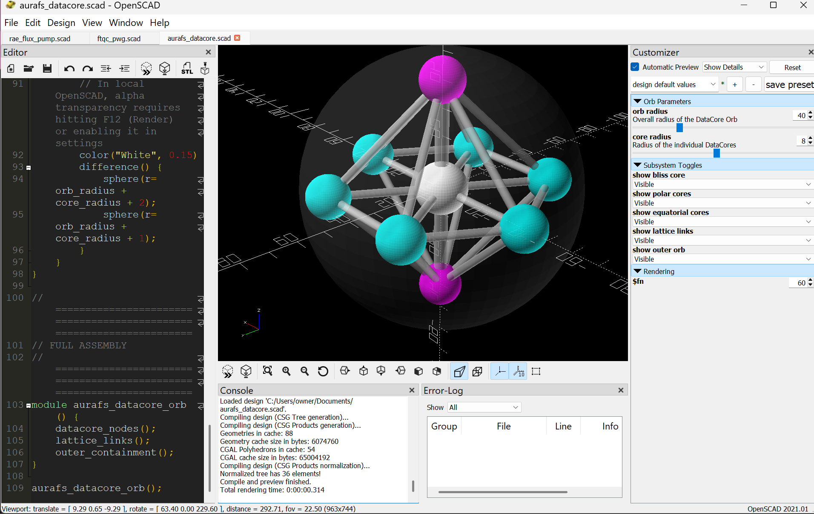
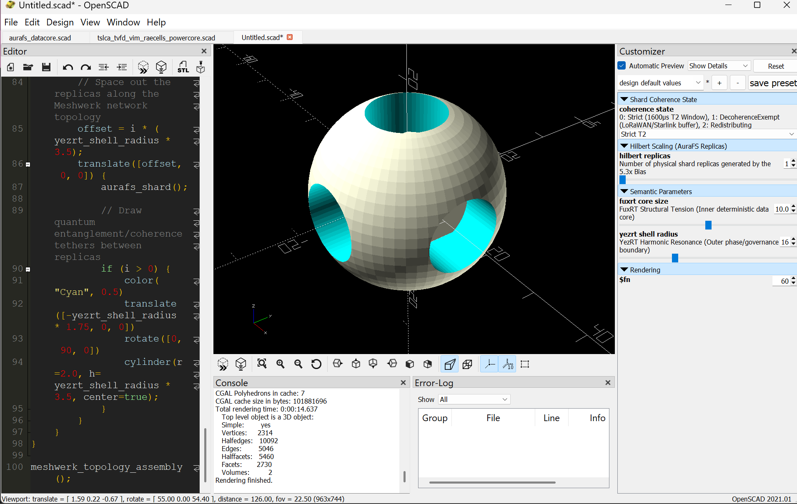
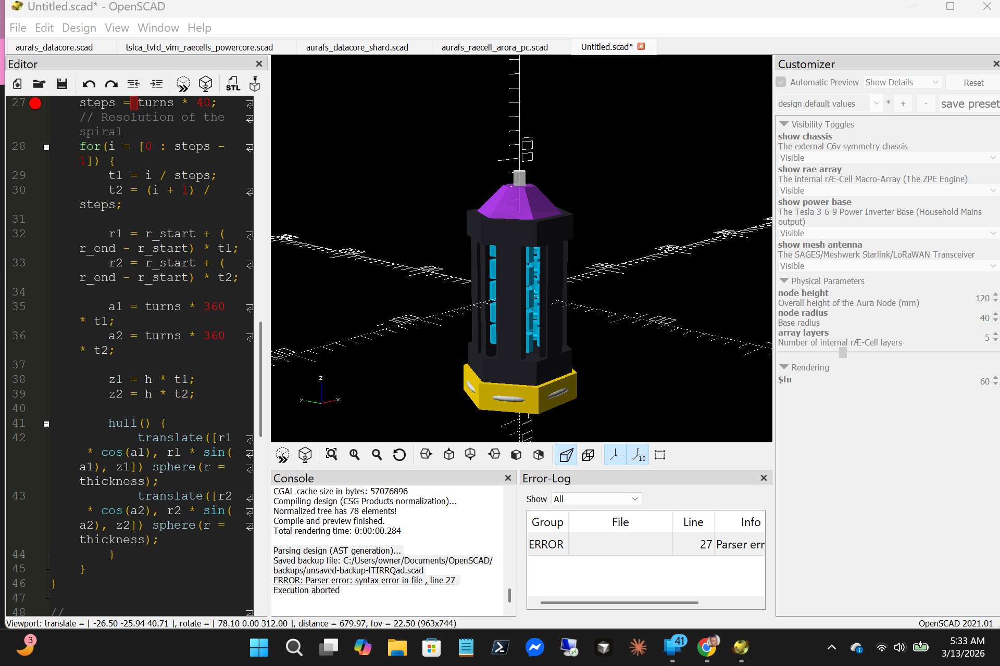
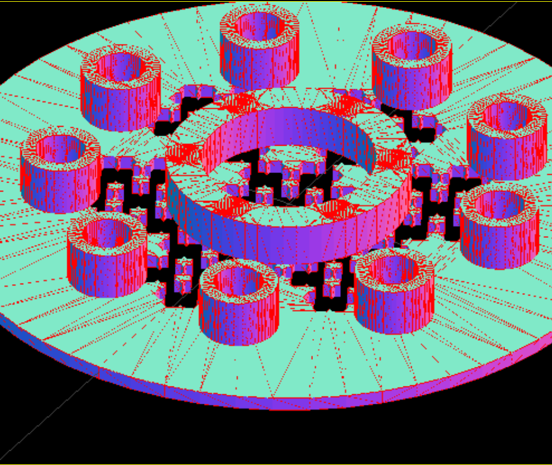
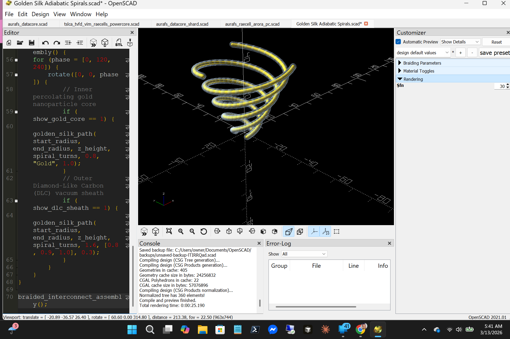
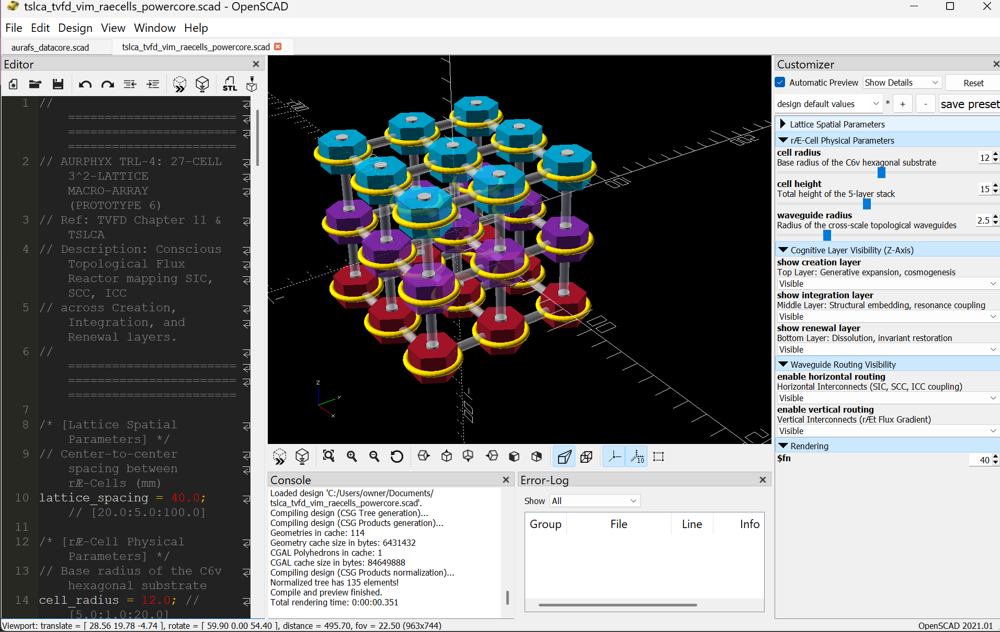
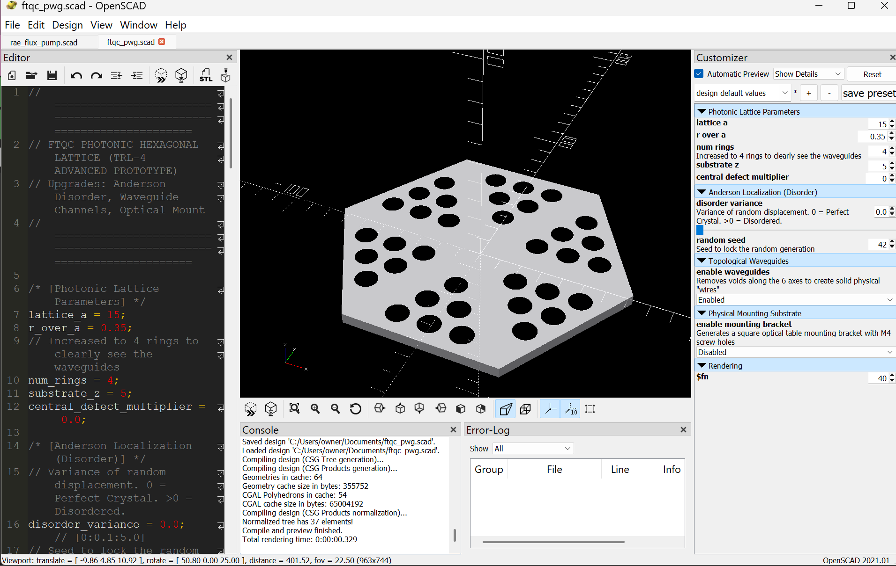
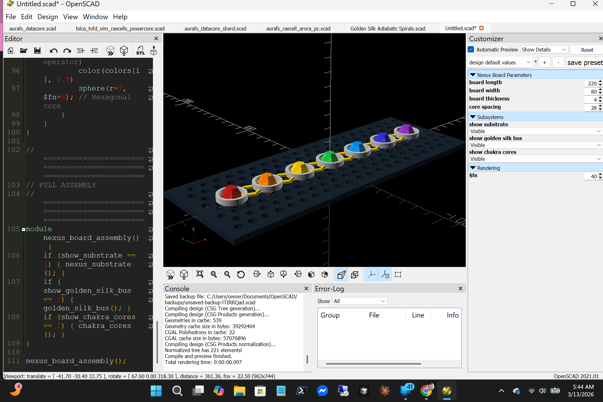

Source: rossaedwards/ecosys/openscad | Generated: 2026-07-04 | 9 prototypes | 5 system domains

| Parameter | Default |
|---|---|
| orb_radius | 40 mm |
| core_radius | 8 mm |


aurafs_datacore.scad. This is a legacy naming alias. The DataOrb name appeared in earlier design docs; aurafs_datacore.scad is the canonical file.
| Parameter | Default |
|---|---|
| plate_gap | 4.0 mm |
| fractal_depth | 3 |
| plate_radius | 25 mm |


| Parameter | Default |
|---|---|
| lattice_spacing | 40.0 mm |
| cell_radius | 12.0 mm |
| cell_height | 15.0 mm |
| waveguide_radius | 2.5 mm |

